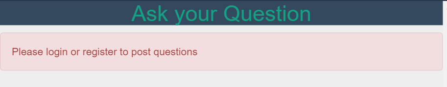

Project : Ask Questions
The ask questions page is only accessible to loggedin users. This is a very important feature as a student can ask questions without any hassle using this functionality.
The user can ask questions and tag them as well. Angular directive for adding tags is used here.
Snapshot:

Snapshot when not logged in :

Ask Services
Ask Services include adding a question to the database ans adding tags to the database.
- AddQuestion service to add a question to database.
- Add tags service to add a tag to database.